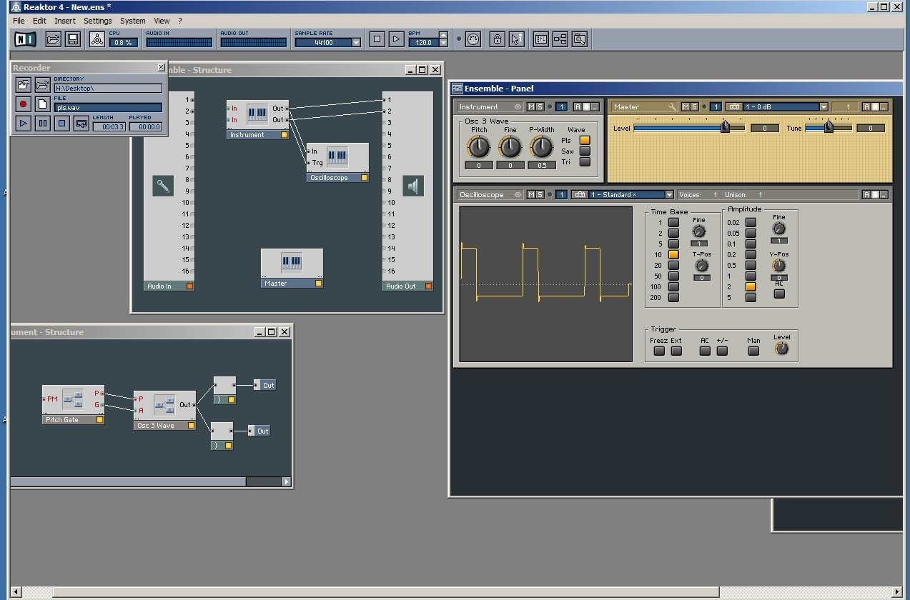
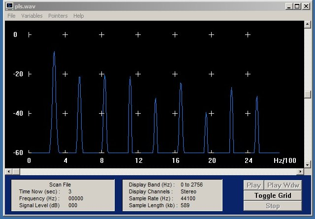
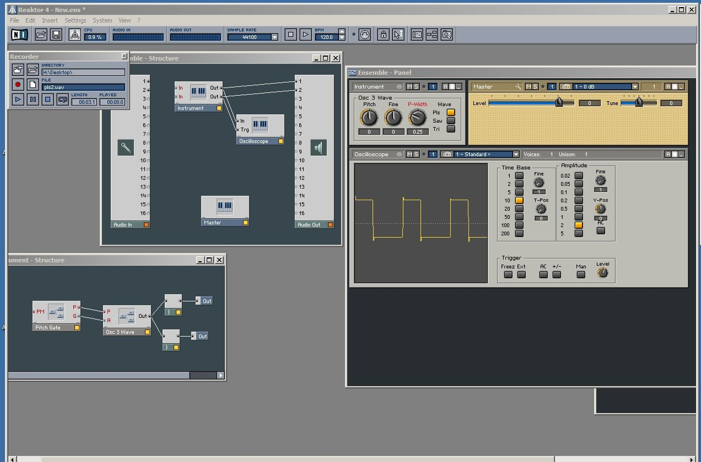
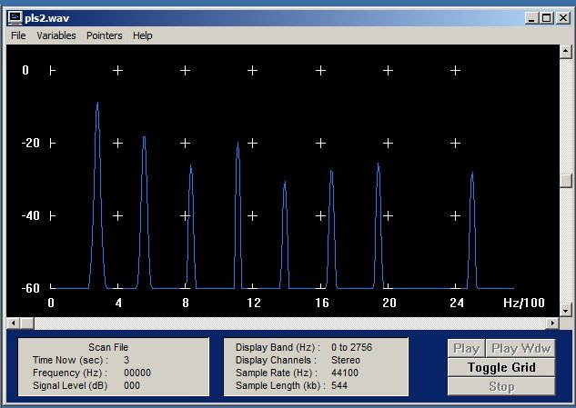
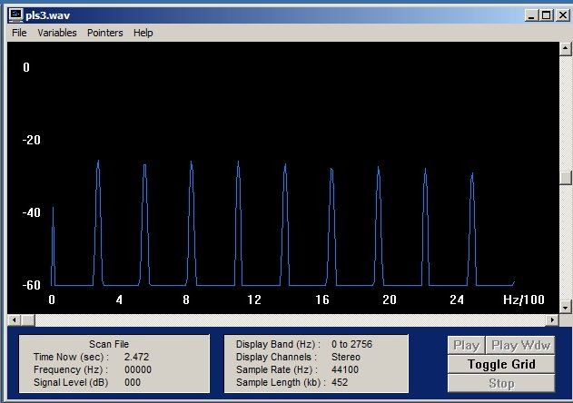
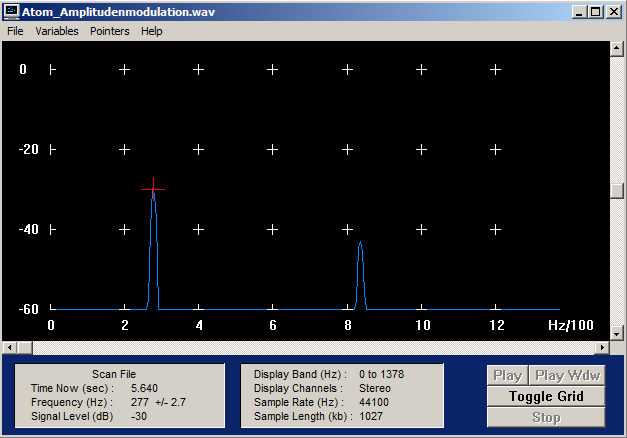
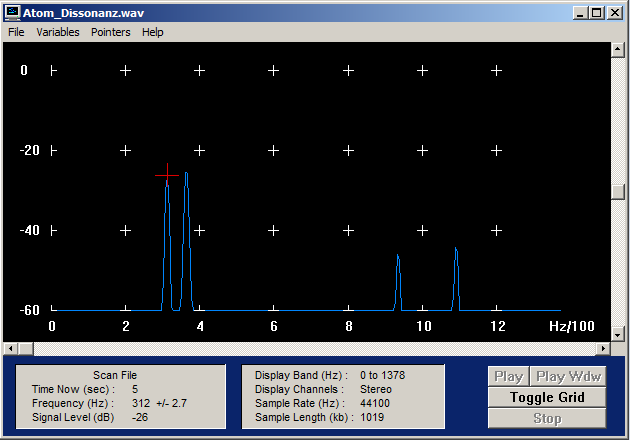

Zunächst brauchen wir nur ein PitchGate und einen Oszillator. Im Ensemble-View fügen wir ein Oszilloskop ein, mit dem wir das Zeitsignal des Klangs darstellen können. Nun schauen wir uns die Wellenformen der Grundklänge des Oszillators an (Sägezahn, Rechteck, etc.). Wir können nun Beispiele der einzelnen Klänge in Reaktor aufzeichnen. Über das Menü "View->Show Recorderbox" exportieren wir die Klänge als wav und lesen sie in GRAM über 'Scan File' ein. Um das Spektrum anzuzeigen, müssen wir den Display-Type "Line" auswählen. Es erscheint eine Liniendarstellung des Amplitudenspektrums mit dB-Angaben (Toggle Grid). Aus diesen können wir dann lineare Prozentwerte mit Bezug auf die Grundschwingung berechnen. Wir setzen dazu die Grundschwingung mit 0 dB entspr. 100 % an. Variiere die Pulsweite (d.h. das zeitl. Verhältnis zwischen positivem und negativem Schwingungsteil) bei der Rechteckschwingung (Regler `P-Width ́ am Oszillator) und beobachte, wie sich das Verhältnis der Obertöne verändert. (Ins Ergebnisprotokoll: Bilder der Spektren für drei markante P-Width-Einstellungen beim Rechteck, ein Sägezahn, ein Dreieck, Ausschnitte aus den wavs, Angaben der Frequenzen und Amplituden in dB und Prozentwerten für die Grundschwingung und die ersten drei Obertöne, bei denen die Amplitude größer 0 ist).
Lösung:
 |
 |
| N | Frequenz [Hz] | dB | Differenz zum Grundton [dB] | % |
|---|---|---|---|---|
| 1 | 280 | -8 | 0 | 100 |
| 2 | 560 | -21 | -13 | 22,4 |
| 3 | 830 | -21 | -13 | 22,4 |
| 4 | 1104 | -21 | -13 | 22,4 |
 |
 |
| N | Frequenz [Hz] | dB | Differenz zum Grundton [dB] | % |
|---|---|---|---|---|
| 1 | 280 | -9 | 0 | 100 |
| 2 | 554 | -18 | -9 | 35,5 |
| 3 | 830 | -26 | -17 | 14,1 |
| 4 | 1109 | -20 | -11 | 28,2 |
 |
Der erste hier dargestellte Wert ist lediglich ein Offset (DC)
| N | Frequenz [Hz] | dB | Differenz zum Grundton [dB] | % |
|---|---|---|---|---|
| 1 | 275 | -25 | 0 | 100 |
| 2 | 549 | -27 | -2 | 79,4 |
| 3 | 829 | -26 | -1 | 89,1 |
| 4 | 1109 | -25 | 0 | 100 |
| N | Frequenz [Hz] | dB | Differenz zum Grundton [dB] | % |
|---|---|---|---|---|
| 1 | 280 | -14 | 0 | 100 |
| 2 | 560 | -20 | -6 | 50,1 |
| 3 | 829 | -24 | -10 | 31,6 |
| 4 | 1098 | -27 | -13 | 22,4 |
| N | Frequenz [Hz] | dB | Differenz zum Grundton [dB] | % |
|---|---|---|---|---|
| 1 | 280 | 12 | 0 | 100 |
| 2 | 840 | -32 | -20 | 10 |
| 3 | 1389 | -40 | -28 | 4 |
| 4 | 1938 | -45 | -33 | 2,2 |
Nun bringen wir einen zweiten Oszillator zum Einsatz. Um die Ausgänge der beiden Oszillatoren anschließen und in der Lautstärke regeln zu können,
benötigen wir eine Mixing Matrix 2x2, von der wir allerdings den zweiten Ausgang löschen können. Zunächst stellen wir beide Oszillatoren auf exakt dieselbe Frequenz und
Dreiecksschwingung. Dann verstimmen wir den zweiten gegen den ersten und zeichnen den Klang auf, wenn wir gerade eine Amplitudenmodulation feststellen (Fall A), d.h.
einen in der Lautstärke schwankenden Ton. Wir verstimmen die Oszillatoren weiter gegeneinander, bis wir den Eindruck einer Dissonanz haben (Fall B), d.h. es entsteht ein
rauher, unangenehmer Klang.
Beachte, dass der Regler 'Pitch' den betreffenden Oszillator in etwa um Halbtöne verstimmt, während 'Fine' dies um Bruchteile von Halbtöne tut. Am besten experimentiert man zunächst mit dem 'Fine'-Regler und erst,
wenn z.B. bei Fall B sich der gewünschte Effekt nicht einstellt, mit dem 'Pitch'-Regler.
Nun stellen wir mit GRAM für die beiden Fälle die Mittel- und Differenzfrequenzen der Schwingungen fest. Es kann sein, dass die Genauigkeit von GRAM beim Fall A zur Bestimmung der Differenzfrequenz nicht
ausreicht. Man kann die Differenzfrequenz aber auch aus dem Oszillogramm der amplitudenmodulierten Schwingung berechnen (z.B. in Samplitude anschauen). Die Periodendauer entspricht nämlich exakt dem
Abstand zwischen zwei Punkten maximaler (oder minimaler) Amplitude. Ins Ergebnisprotokoll für beide Fälle: Mittenfrequenz und Differenzfrequenz, Spektrogramm und wav.
Lösung:

Differenzfrequenz: 2,3 Hz
Mittenzfrequenz: 333,3 Hz

Differenzfrequenz: 52,6 Hz
Mittenzfrequenz: 333,3 Hz
Wir wollen nun versuchen, selber einen coolen Klang zu kreieren. Die einzigen Anforderungen sind, dass die Grundfrequenz bei 220 Hz liegen soll, was einem A entspricht, und dass es ein monophoner Klang ist, d.h. dass nur eine Taste gedrückt wird und eine Note erklingt. Zunächst wählen wir die Grundwellenform (Rechteck, Sägezahn, etc.), die klanglich am besten zu unserem Instrument paßt (auch mit dem Filter experimentieren ! ). Um die Hüllkurve entsprechend manipulieren zu können, brauchen wir ein ADSR-Makro, das wir zwischen dem Pitch-Gate und den Oszillatoren, allerdings nur in der Gate-Weg einbauen. Damit versuchen wir zunächst den zeitlichen Verlauf einzustellen. Vibrato-Effekte lassen sich mit LFOs erzielen. Auch Rauschgeneratoren (Anblasgeräusche !) lassen sich in unseren Synthesizer integrieren. Ins Ergebnisprotokoll: Beschreibung zum Charakter des Klangs (Ähnlichkeit mit welchem Instrument?), Aufbau bzgl. des verwendeten Oszillators, ADSR-Einstellungen und Filtertyp. Endgültige Struktur des Synthesizers Ensemble-Datei, Klangprobe als wav, Hüllkurve als Bild, z.B. aus Samplitude.
Lösung:
Wir haben einen sehr synthetischen Klang erzeugt, der an die Science Fiction Filme der 80er Jahre erinnert.